1. Conceptos de la derivada
En nuestro diario vivir nos encontramos con situaciones que van cambiando según las circunstancias, por ejemplo, ir en un carro de una ciudad A, a una ciudad B de Colombia, registrará diferentes velocidades dependiendo del camino, tráfico y otros elementos. Otra situación es el cambio de temperatura que sufre un buen chocolate caliente, a medida que pasa el tiempo este se enfría, por lo menos queda a temperatura ambiente o al clima como dicen en muchas partes del país; y así se tienen muchos ejemplos más de cambios de situaciones cotidianas y como se mencionó en temas anteriores, estas situaciones se relacionan con funciones, ¿y los cambios?, estos se relacionan con derivadas.
Las derivadas, así como las funciones, están en todas partes, ya que registra el cambio o variación de la función, así que podemos realizar análisis de diferentes situaciones a partir de la derivada.
1.1 Definición geométrica de la derivada
Para acercarnos al concepto de derivada, se toma un problema de velocidad. En la siguiente gráfica se muestra el desplazamiento s de un vehículo en función del tiempo t.
Con esta información podemos calcular la velocidad promedio del vehículo, que será la variación de la posición dividida entre la variación del tiempo.
¿Y qué es la variación de la posición y del tiempo?
La variación será la diferencia entre un punto final menos un punto inicial. La variación se representa con el símbolo delta ∆.
Si t en un tiempo inicial, y t + h es un tiempo final, donde h representa un valor después de t , entonces, la variación del tiempo será:
∆t = t0 + h - t0 = h
La distancia inicial será la posición de s en t , es decir la posición inicial es s(t ), por lo tanto, la posición final es s(t +h). Entonces:
∆s = s( t0 + h ) - s ( t0 )
En la siguiente gráfica se ve la representación de la posición y del tiempo, donde A0 en la coordenada del punto A0 ( t0, s ( t0 ) ) y A ( t0 + h, s ( t0 + h ) ) y h es cualquier lapso de tiempo después de t.
Como se mencionó, la velocidad promedio en el cociente entre la variación de la posición y la variación del tiempo, esto es:
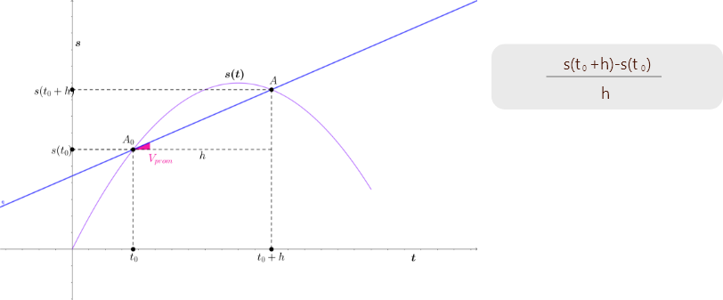Lo anterior se conoce también como cociente incremental.
¿Pero qué significa el cociente incremental?
Gráficamente, el cociente incremental no es más que la pendiente de la recta que pasa por los puntos:
A0 ( t0 , s ( t0 ) ) y A ( t0 + h , s ( t0 + h ) )
Esta recta, es secante a la curva dada por s(t). La pendiente de la recta en este caso, es la velocidad promedio Vprom
Ahora, si varía el valor de h de manera que sea muy cercano a cero, es decir que todos los valores de t + h0 sean muy cercanos a t0 , se obtendrán diferentes rectas secantes con sus respectivas velocidades promedio como se observa en la siguiente animación.
Ejemplo
El movimiento de un vehículo está dado por:
s ( t ) = -0.4t2 + 8t
con s en kilómetros y t en horas.
Para un t0 = 4 horas entonces.
s ( t0 ) = s ( 4 ) = -0.4 ( 4 )2 + 8 ( 4 ) = 25.6 km
Ahora h toma cualquier valor, en este caso un tiempo después de t0 , sea h = 13 horas, entonces:
s ( t0 + h ) = s ( 4 + 13 ) = s ( 17 ) = -0.4 ( 17 )2 + 8 ( 17 ) = 20.4 km
Se calcula la velocidad promedio:
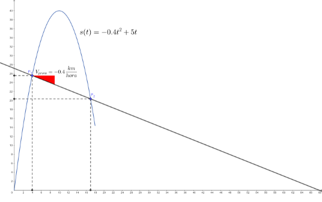Se varía h, se ve las diferentes velocidades promedio, ver la siguiente animación:
Como se pudo observar el punto A0 ( t0, s ( t0 ) ), permanece fijo y solo el punto A ( t0 + h, s ( t0 + h ) ), se desplazó en dirección al punto A0. Esto es porque se está variando h con valores pequeños cercanos a cero. Esta variación llevará a que en algún momento A se superponga a A0, lo que significa que no se formarán una recta secante, sino una recta tangente a la curva dada por s en punto A0.
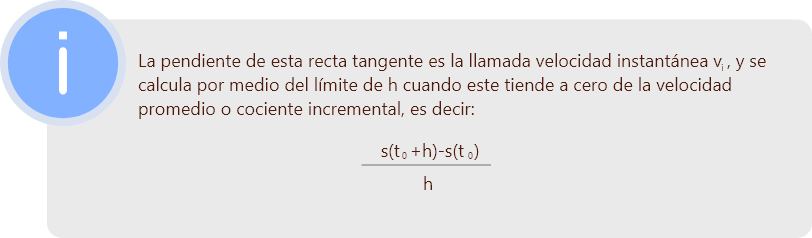Ahora v0, es la velocidad instantánea en t0, lo cual significa que podemos calcular la velocidad instantánea en cualquier tiempo t0, por lo tanto
Ejemplo
Un objeto es lanzado hacia arriba desde una altura de 7 metros, su trayectoria s en metros en cada momento segundo t es:
s ( t ) = -4.9t2 + 7t + 7
El signo en la velocidad instantánea se debe a que el objeto en algún momento está subiendo y va en contra de la gravedad y luego a favor de esta.
1.2 Derivada de una función en un punto
es la derivada de la función f en el punto x0.
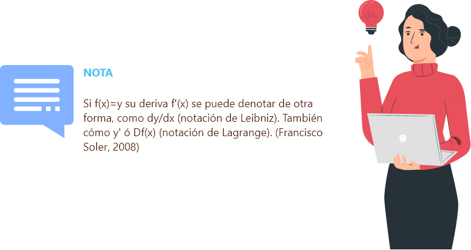Ejemplo
Considere la función
f(x) = 3x2 y x0 = 4
se quiere encontrar f' ( 3 )
Solución
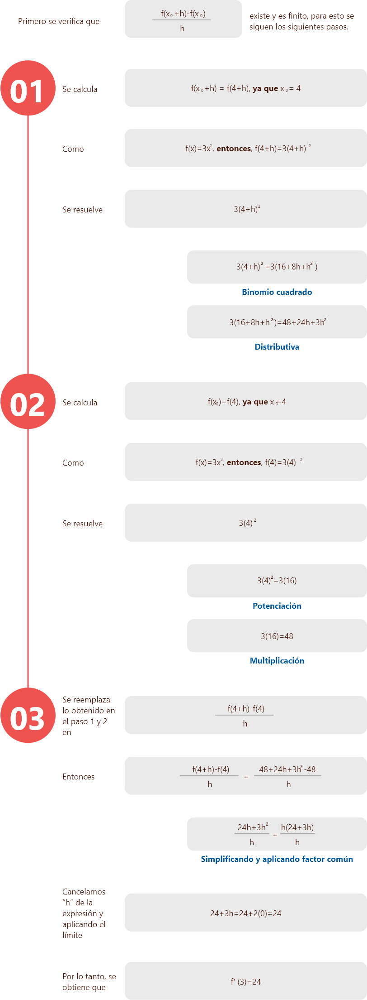1.3 Cálculo de la derivada
1.4 Derivadas de funciones trascendentes
Las funciones trascendentes son un tipo de funciones donde la variable independiente aparece como una potencia, como parte del argumento de un logaritmo o el ángulo de una función trigonométrica, estas funciones son:

Funciones trigonométricas
(seno, coseno, tangente, secante, cosecante, cotangente)
Función Exponencial
Función Logarítmica
En este curso las derivadas de las funciones trascendentes las denotaremos como reglas de derivación:
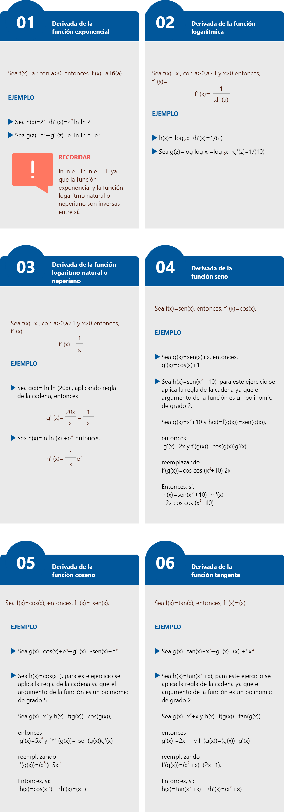1.5 Regla de L'Hopital
La regla de L’Hopital nos ayuda a evaluar límites indeterminados de la forma 0/0, o ∞/∞ cuando se sustituye el límite. Estas son límites de funciones de la forma f(x)/(g(x)) y esta regla consiste derivar el numerador y el de denominador como dos funciones independientes siempre que exista la deriva en ese punto, la veces que sea necesario hasta encontrar el límite siempre que el resultado anterior sea de la forma 0/0, o ∞/∞.
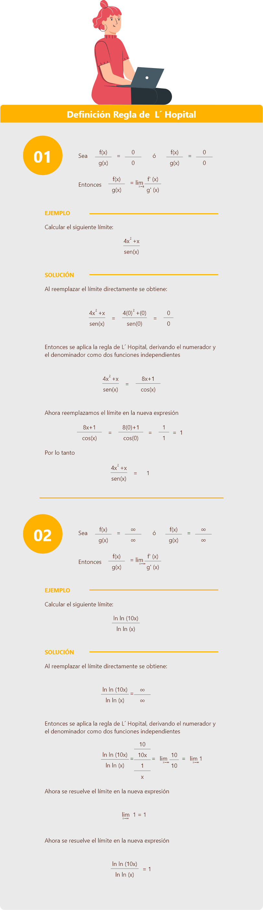Aplicación
La población de cierta clase de bacteria, en un ambiente controlado, se puede modelar con la siguiente función:
donde P es la población de bacterias cada t horas.
Si el tiempo pasa indefinidamente, ¿cómo será el tamaño de la población?
Solución
Como el tiempo pasa indefinidamente, se considera t → ∞, por lo tanto, analizaremos el límite de la función P(t)
Evaluado directamente el límite se obtiene:
Evaluado directamente el límite se obtiene:
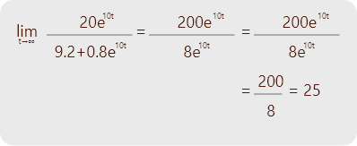Esto significa que esta bacteria en el ambiente controlado después de mucho tiempo, su población tenderá a tener 25 bacterias.
1.6 Criterios de la primera y segunda derivada (puntos críticos, máximo, mínimos)
Antes de hablar de máximo y mínimos relativos, mencionaremos los puntos críticos.
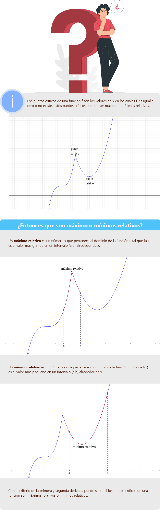Criterio primera derivada
Criterio segunda derivadas
Sea una función y uno de sus puntos críticos. Entonces:
si , la función tiene un máximo en
si , la función tiene un punto de inflexión en
Ejemplo
Sea la función:
f(x) = 0.2x3 - 0.3x2 - 7.2x - 0.2
Como se puede ver en la gráfica tiene un punto máximo relativo y un punto mínimo relativo.
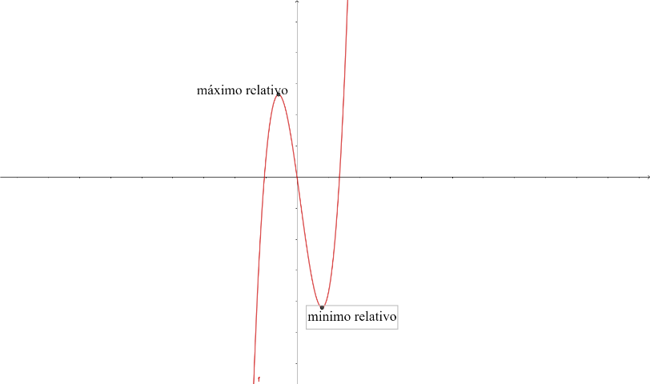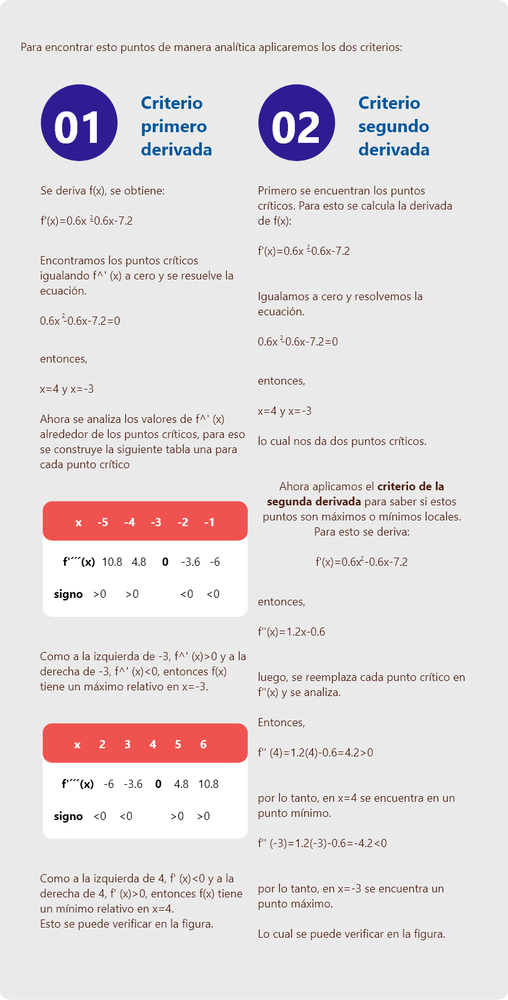2. Conceptos básicos de integración
Proceso que permite restituir una función que ha sido previamente derivada. Es decir, la operación opuesta de la derivada, así como la suma es a la resta.
Por conveniencia se introduce una notación para la antiderivada de una función.
Si F(x) = f(x), se representa
A continuación, se hace el ejemplo de una integral de un monomio.
Vamos a integrar la F(x) = 4 y lo vamos a evaluar entre 0 y 1.
Glosario
Recta tangente:es una recta que toca a la curva en un solo punto.
Recta secante:es una recta que corta a una curva en 2 puntos. Conforme estos puntos se acercan y su distancia se reduce a cero, la recta adquiere el nombre de recta tangente.
Velocidad:es la magnitud física que relaciona el cambio de posición (o desplazamiento) con el tiempo.
Material complementario
| Nombre del documento o material | Tipo de material | Enlace del recurso |
|---|
Referencias bibliográficas
Budnick, F., 1997. Matemáticas Aplicadas para Administración, Economía y Ciencias Sociales, Tercera Edición. Mc. Graw Hill. México.
Francisco Soler, R. N. (2008). Cálculo con aplicaciones. Pearson Educación de Colombia, LTDA.
Hernández, E. (9 de octubre 2020). Criterio de la primera derivada para determinar los máximos y los mínimos de una función.https://tecdigital.tec.ac.cr/revistamatematica/cursos-linea/CALCULODIFERENCIAL/curso-elsie/aplicacionesderivada/html/node4.html
Matemáticas Razonamiento y aplicaciones, Decimosegunda Edición, Pearson 2013.